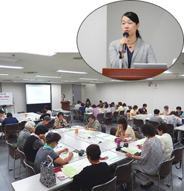

埼玉県消費者団体連絡会
6月27日(月)10時30分より、埼玉県消費者団体交流会委託事業｢第1回県内消費者団体交流会」を埼玉県県民健康センター大会議室Cで開催し、19消費者団体50人が参加しました。参加者は地域での見守りについて学び、午後からは活動の悩みなどを交流しました。
参加者19団体50人
伊奈町くらしの会、桶川市くらしの会、久喜市くらしの会、春日部市くらしの会、志木市くらしの会、白岡市くらしの会、めぬまくらしの会、越谷市消費生活研究会、西部地区消費者団体活動推進世話人会、和光市消団連、狭山市消団連、生活協同組合コープみらい、パルシステム埼玉、埼玉県地域婦人会連合会、新日本婦人の会埼玉県本部、埼玉母親大会連絡会、さいたま市消団連、埼玉県生活協同組合連合会、埼玉県消費者団体連絡会
午前は、法人消費者教育支援センター統括主任研究員の柿野成美さんを講師に迎え、｢すすめよう見守り～チェックシートの活用と消費者団体ができること～｣と題して、地域で消費者被害を防止するための見守りについて、具体的な事例をもとにしたグループワークを交えて学びました。高齢者の消費者被害を防止するために必要なことをグループで考える場面では、｢町内会のイベントに誘うなど、高齢者を孤立化させない取り組みが重要だと思う｣など活発な話し合いが行われました。
午後は、4つのグループにわかれて、 午前中の講演の感想交流、
午前中の講演の感想交流、 消費生活展などでの取り組み・活動の周知について、
消費生活展などでの取り組み・活動の周知について、 行政との関わりの現状、
行政との関わりの現状、 行政や地域の団体と一緒になっておこなっている啓発の活動など、4つのテーマを中心に話し合いました。交流後は全体会を再開し、各グループで交流された内容についてわかちあいました。分散会の中では行政とのつながりの現状や悩み、消費者被害防止のためには地域の医療機関など他の団体との連携が重要など、活動の中で感じていることを交流しました。
行政や地域の団体と一緒になっておこなっている啓発の活動など、4つのテーマを中心に話し合いました。交流後は全体会を再開し、各グループで交流された内容についてわかちあいました。分散会の中では行政とのつながりの現状や悩み、消費者被害防止のためには地域の医療機関など他の団体との連携が重要など、活動の中で感じていることを交流しました。
|  |